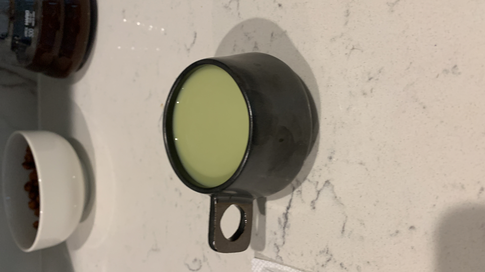

i've always liked hot matcha latte more than cold matcha latte, it's kind of because since i was young, i've been told cold water/drinks aren't good for women, especially during their periods, as it can mess with their health (that is actaully a myth but oh well). plus when the ice melts, it just dilutes the taste of my drink so it's kind of meh. but of course, when it's hella hot, i would probably order a cold drink to help 🆒 down a little bit

drink
makes 1 matcha latte | total time: 5-10 minutes
MATCHA LATTE
ingredients
- 1 tsp matcha powder
- 1 tsp warm/hot water
- 1 tsp honey (or syrup, any sweetener you like or non at all)
- 6oz oat milk (or any milk of you choice) - tbh i just eyeball the amount of milk i need & hope for the best
method
- sift matcha into cup
- add water & honey
- using bamboo whisk, whisk vigorously in a zig-zag pattern until all clumps dissolve & a nice froth is achieved
- combine whisked matcha with warm or cold milk
- *gulp* 🍵